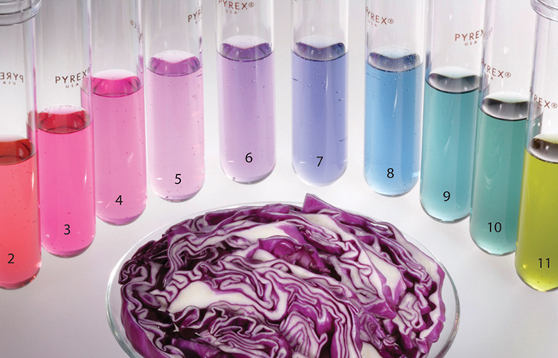

Proyecto para la Feria de la Ciencia
El pH es una medida que indica qué tan ácido o básico es un líquido. Su valor va de 0 a 14: los valores bajos representan sustancias ácidas, los altos indican sustancias básicas (o alcalinas), y el valor 7 corresponde a una sustancia neutra, como el agua pura.
El repollo morado (también llamado col lombarda) es una variedad de col que tiene un color púrpura o violeta intenso debido a unos pigmentos naturales llamados antocianinas. Estas sustancias cambian de color según el nivel de acidez o alcalinidad (pH) del medio en el que se encuentren, lo que convierte al repollo morado en un excelente indicador natural de pH.
El repollo morado contiene un pigmento natural llamado antocianina, que actúa como un indicador de pH. Dependiendo del nivel de acidez o basicidad del líquido en el que se sumerge, la antocianina cambia de color:
El experimento con repollo morado demuestra que las antocianinas son pigmentos naturales sensibles al pH, y que es posible identificar si una sustancia es ácida o básica sin usar productos químicos peligrosos. Además, es una forma divertida, segura y colorida de aprender sobre química y biología.